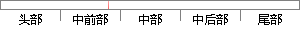

异常处理完毕后，恢复用户现场。
片段位置图

相似结果
相似片段：在进入异常之前,需要对当前程序现场予以保存,当从异常处理完毕,再恢复被中断的...用户的命令输入;对于没有操作系统的,启动后,直接开始执行应用程序或者等待用户的...
| 标题 | 《基于嵌入式USB主机的记录仪》 |
| 对比库 | 中国学位论文全文数据库 |
| 作者 | 罗太龙 |
| 机构 | 浙江大学 |
| 分类 | 机械电子工程 |
| 年份 | 2006 |
| 相似率 | 100% （严重抄袭） |
※ 片段修改建议 ※
近似词参考：- 恢复：规复
- 异常：非常 异样
系统自动生成语句：非常处理完毕后，规复用户现场。
注：本片段修改建议为系统自动生成，仅供参考。